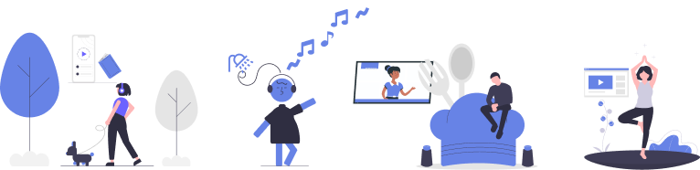
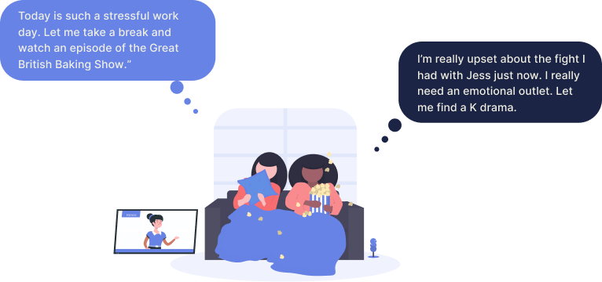
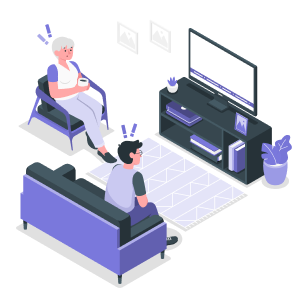

Our initial research goal was to understand the current state of content consumption and what users consider to be the integral elements of the TV viewing experience.
- What do our users think TV is?
- What are users’ current digital content consumption habits and experiences?
- How do people use, consume and view TV in their daily life?
Keeping these questions in mind, we studied our users’ behaviors, observed their reactions to novel scenarios, and examined the potential user needs that are not currently being met.

In doing so, we realized that content consumption makes up an enormous part of the average users’ day. Whether we’re listening to a podcast while driving, listening to music while cooking, or watching a show that will help us relax after a long day at work - Content consumption is integral to our routine, regardless of the amount of attention we have to give or the mood we’re in. We expect our content to not only entertain us, but to flow with us throughout our day, fit into our routine, and adapt to our emotions. If we’ve had a long day at work, we’ll watch a drama to help us get out of our heads. If we’re doing chores around the house, we’ll rewatch The Office for the fourth time so we can be entertained despite our wavering attention. Therefore, we established that users have a need for content to adapt to their long-term lifestyles and short-term context.
Previous research found that people have a desire to immerse themselves in virtual environments based on their mood or current emotional state. Whether our participants’ goals were to, for example, wallow in their sadness or counteract it with something happy, it became clear that users let their mood dictate the content they consume and they anticipate that content would further regulate their mood in the future.

As a result of this finding, emotional responses and consequential content adaptations became a main focal point of our prototyping for the future of digital television experiences. While there was strong evidence to reinforce content consumption experiences as emotional tools, testing the several logistical variables of the experience was vital for gaining a deeper understanding of what users would want, need, and use in their everyday lives.
User testing of our early prototypes gave us insight into user reactions to real-time plot changes based on user emotions, but there were other stylistic aspects of content that we understood to be just as valuable to synthetically adapt, including:
- Color Schemes,
- Background Music,
- & Environmental Features
Directing the plot on particular branch paths can be a dramatic adaptation for users during a content consumption experience and while stylistic adaptations are slightly more subtle, they can make just as much of an impact on a user’s experience by conforming to a user’s current and desired emotional state.
Growing numbers of users have begun to think of TV as a secondary, or background activity. Part of what makes it so appealing is that it requires no active input once you get started watching. You can make meals, chat with friends, workout, or browse the web while the show plays in the background. People usually choose shows that feel low-stakes, breezy comedies or rewatches, so that they don’t feel they have to miss anything, stop, and rewind.
With novel technologies in the near future, we could alleviate these pain points by monitoring attention levels and using it to feed the level of attention the content requires. We considered various modality changes to facilitate this process and maintain user engagement in content, including:
- Pausing,
- Rewinding,
- & Audio Descriptions
Testing of these three different engagement retainment techniques showed that users preferred pausing if they were partaking in a high-cognitive task and audio descriptions if they were partaking in a low-cognitive task. The rewinding method was the least popular amongst users due to it’s potential to disrupt the viewing experience, rather than aid it.
However, while we typically envision this being used with rewatches or low-effort content, due to the nuances of content-viewing and the circumstantial aspects of each unique viewer’s ever-changing context, some questions remain to consider in implementation of these engagement retainment methods.
- Should viewers get a choice of which modality to make a default?
- Should it be chosen for them?
- How does it differ when someone has seen the content before vs when they haven’t?
By tracking user’s historic TV viewing habits, expectations, and preferences, we envision a future where the synthetically-generated content will be modified and personalized based on user-specific viewing experiences and expectations, including, but not limited to, their emotional responses to certain genres of shows, as well as the time, intention and location in which they view the TV content. While the real-time emotional response is responsible for making micro-decisions within an emotional frame of reference, the actual frame of reference is based on historical viewing preferences of the user.

In the framework of content adaptation, historical viewing preferences in combination with scene-level emotional responses allows for customization of visuals to more accurately target emotions on a by-person basis. Current recommendation systems may be able to ascertain that the user wants to watch horror content in order to be scared, but what is it that scares this particular user? Gore? Jump scares? Or maybe such things deter viewers from engaging in particular genres. Additive and subtractive measures could even be made to accentuate certain attributes while dampening others, increasing the enjoyment of already watched genres while potentially opening up new genres that were previously avoided due to age or personal restrictions.
The system’s understanding of scene-level content attributes and the user’s historical preferences not only helps narrow down the correct content to place in front of the viewer, but also brings about the potential to distribute individual content to a wider market.
While the goal for context-aware content is to have the narrative adapting automatically based on the user's emotional responses, we learned from early prototyping that users have mixed emotions about the automated viewing experiences. Viewer agency seems to be something that users would want while they consume content, but what type of and how much control do users want to have?
Our findings suggest that although users understand the automatic adaptation offers an easier and more natural viewing experience, many have hesitation about whether or not they want every single future viewing experience to be like this. They prefer to have a certain level of agency over where the plot-line is going. To mitigate this, we introduced user interface additions to existing streaming platforms that would allow users to have greater autonomy over their customized experience.
- Netflix
- Hulu
- Disney+
- Amazon Prime
Most consumers own internet-connected devices that are meant to make their lives easier, like smartwatches (Apple Watch, Fitbit, etc.), smart speakers (Amazon Alexa, Google Home, etc.), security cameras (Ring, Nest, etc.), and much more. These devices are not necessarily always recording or monitoring us, but they are always listening - ready for a command to be given that would help them serve us better. So while the novel solution proposed by our team can, no doubt, blend seamlessly into user’s lives by utilizing these common smart home and wearable technologies, there is still some potential for risk to be considered if it were democratized as a product.

At the lowest end of the risk spectrum is the potential for over-personalization. If a user has a preference for a certain type of content or genre, they could get trapped in a cyclical feedback loop as the system continues providing this content and cuts out everything else.
Next at medium risk is the autonomy, or lack thereof, that users have over the adaptations in their content. While we are working towards defining where the user-preferred line is between control and automation, this will continue to be a gray area as synthetic content requires some degree of yielding user control no matter what.
Finally at the highest risk level is data privacy and the invasive nature of a context-aware system. While most users already own most of the devices required to listen for and input a user’s current state, they would need to be made aware of the way in which their devices would be registering their environmental data in order to function and this has the potential to worry consumers about their privacy, or lack thereof. A potential design solution to mitigate this could be to provide a system whose data lives remotely on an individual user’s device or server, rather than on the cloud, and cannot be shared outside of the system itself.